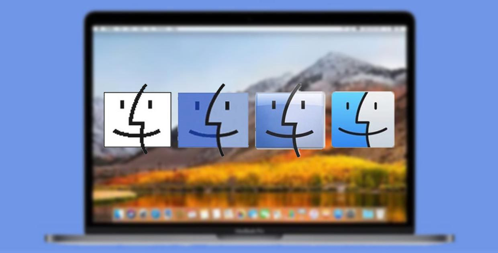
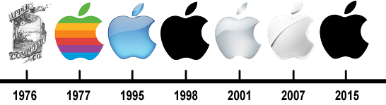

Как менялось MacOS за 33 года

Mac OS (Macintosh Operating System) — семейство операционных систем, производимое
компанией Apple для линейки персональных компьютеров Macintosh.
Система стала одной из первых, предоставлявших пользователю наглядный графический интерфейс вместо
сложной для понимания командной строки.
Впервые Mac OS представили вместе с первым компьютером семейства Macintosh в 1984 году. Термин «Mac
OS» начал использоваться лишь в середине 90-х.
В период с 1984 по 2001 годы Apple выпускала операционные системы с
System 1 до Mac OS 9. Их принято считать классическими. В 2000-м году состоялся
релиз Mac OS X, которая позже получила свою отдельную нумерацию.

Эволюция Windows: как менялась самая популярная ОС за 29 лет
Становление дизайна самой популярной десктопной ОС в мире, а также удачные и провальные решения
Microsoft.
Windows 1.0 — 20 ноября 1985 года
В начале 80-х был лишь один компьютер, с которым рядовой пользователь мог общаться на «ты» — Lisa от
Apple. Проект оказался провальным, но, с одной стороны, он подготовил почву для Mac, а с другой —
создал прецедент использования графического пользовательского интерфейса.
Изначально идея интерфейса WIMP (Windows, Icons, Menu, Pointer) принадлежала Xerox. Но, не сделав
ничего толкового, Xerox передала идею Apple, которая превратила окна, меню, иконки и курсор в
главную «фишку» потребительских ПК.